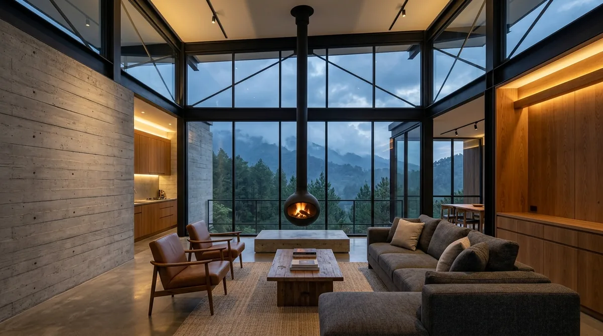

Ringkasan Inti
- Prinsip material ekspos dari gaya industrial dapat memperkaya karakter visual villa di Batu.
- Tata ruang terbuka khas gaya industrial perlu disesuaikan dengan kebutuhan kehangatan di iklim pegunungan Batu.
- Kombinasi material dingin dan hangat menjadi kunci mengadaptasi gaya industrial untuk villa pegunungan.
- Insight ini membantu arsitek villa Batu menciptakan desain yang unik namun tetap nyaman untuk iklim setempat.
Daftar Isi Artikel
- Insight Relevan bagi Arsitek Villa dari Gaya Industrial Araya
- Penerapan Elemen Industrial pada Desain Villa di Batu
- Tantangan Menerapkan Gaya Industrial pada Villa Kawasan Pegunungan
- Cara Menyeimbangkan Karakter Industrial dengan Kenyamanan Villa Pegunungan
- FAQ Seputar Desain Villa Industrial di Batu
Arsitek villa Batu dapat mengadaptasi prinsip material ekspos dan tata ruang terbuka dari portofolio rumah industrial Araya, dengan penyesuaian terhadap iklim pegunungan. Sentuhan raw material yang tegas berpadu harmonis dengan lanskap perbukitan Batu, melahirkan tipologi villa modern yang estetik, berkarakter kuat, dan bernilai sewa investasi tinggi.
Insight Relevan bagi Arsitek Villa dari Gaya Industrial Araya
Kawasan perumahan premium Kota Araya di Malang dikenal luas dengan eksplorasi arsitektur kontemporer, salah satunya hunian bergaya industrial modern yang menonjolkan kejujuran material. Bagi arsitek yang merancang villa di kawasan Kota Wisata Batu, portofolio rumah industrial di Araya menyuguhkan banyak pelajaran berharga tentang bagaimana mentransformasikan material mentah menjadi karya arsitektur berkelas.
Sejumlah insight kunci yang dapat diserap antara lain:
- Karakter Visual yang Berbeda dan Kuat: Penggunaan dinding beton ekspos (fair-faced concrete) dan profil baja struktural I-beam memberikan kontras dramatis terhadap panorama alam hijau perbukitan Batu, berbeda dari gaya villa tropis bambu atau bata merah konvensional.
- Tata Ruang Terbuka (Open-Plan Living): Konsep denah tanpa sekat masif di Araya terbukti efektif menciptakan ruang komunal luas yang menghubungkan ruang keluarga, ruang makan, dan pantry—sangat cocok untuk aktivitas berkumpul bersama keluarga besar atau tamu liburan di villa.
- Pemanfaatan Elemen Struktural sebagai Estetika: Rangka atap baja hitam, tangga gantung bermaterial perforated metal, serta instalasi ducting ekspos yang dirancang rapi berfungsi ganda sebagai elemen visual utama yang memangkas biaya ornamen interior tambahan.

Penerapan Elemen Industrial pada Desain Villa di Batu
Meskipun gaya industrial menawarkan estetika yang sangat menarik, penerapannya pada villa di Batu tidak bisa sekadar menyalin mentah-mentah proyek di dataran rendah seperti Araya. Ketinggian Kota Batu (700–1.200 mdpl) membawa suhu udara harian yang jauh lebih dingin (16–22°C) serta kabut tebal pada sore hingga malam hari.
Strategi adaptasi yang tepat dilakukan melalui langkah-langkah berikut:
- Kombinasi Beton Ekspos dengan Kayu Hangat: Menggunakan beton ekspos hanya sebagai dinding aksen (focal point), lalu mengimbanginya dengan pelapis dinding kisi-kisi kayu jati, merbau, atau parket lantai kamar tidur agar ruangan tidak terasa seperti gudang dingin.
- Penggunaan Kaca Ganda (Double Glazing): Bidang jendela kaca lebar khas industrial tetap dapat diterapkan untuk membingkai panorama Gunung Panderman, namun wajib menggunakan kaca berinsulasi ganda atau low-E glass guna menahan suhu dingin pegunungan merembes ke dalam villa.
- Palet Warna Earthy & Warm Ambiance: Menyeimbangkan warna abu-abu monokrom semen dan besi hitam dengan sentuhan warna terakota, sofa kulit cokelat karamel, serta pencahayaan lampu temaram 2700K–3000K yang menghangatkan atmosfer.
- Focal Point Perapian Modern (Suspended Fireplace): Mengintegrasikan cerobong tungku perapian baja gantung di tengah ruang duduk sebagai pusat kehangatan keluarga sekaligus ikon visual kemewahan villa pegunungan.
Catatan Arsitek Malang
Kelembapan udara di Kota Batu saat musim hujan bisa melampaui 85%. Untuk elemen baja ekspos, wajib dilakukan proses sandblasting diikuti aplikasi primer epoxy anti-karat dan polyurethane topcoat matte. Sedangkan untuk beton ekspos luar ruangan, gunakan coating hydrophobic berbasis siloxane agar pori-pori beton tidak menyerap air dan terbebas dari lumut hitam.
Tantangan Menerapkan Gaya Industrial pada Villa Kawasan Pegunungan
Membangun villa bergaya industrial di lereng pegunungan menghadapi tantangan teknis tersendiri yang wajib diantisipasi sejak tahap pembuatan gambar kerja arsitektur DED:
Tantangan pertama adalah sensasi termal dingin (cold touch) dari permukaan plester semen dan lantai polished concrete. Tanpa perencanaan termal pasif, tamu villa akan merasa tidak betah berjalan tanpa alas kaki.
Tantangan kedua berkaitan dengan risiko kondensasi udara pada rangka metal dan kaca. Jika terjadi pertemuan udara panas dalam ruangan dengan hawa dingin luar yang tajam, embun air akan terbentuk di profil jendela baja dan dapat memicu korosi dini jika sistem talang dan sealent tidak kedap air.
Tantangan ketiga adalah akustik ruangan. Material keras seperti semen, kaca lebar, dan lantai beton cenderung memantulkan gelombang suara, menciptakan gema yang kurang nyaman jika tidak diredam dengan panel akustik kayu berlubang atau karpet lembut.
Cara Menyeimbangkan Karakter Industrial dengan Kenyamanan Villa Pegunungan
Kunci keberhasilan memadukan gaya industrial Araya ke villa Batu adalah prinsip "komplementer material". Kerasnya beton dan dinginnya baja harus dijinakkan oleh tekstur serat kayu alami, pencahayaan bergradasi lembut, serta vegetasi tanaman cemara dan pakis hias.
Area publik seperti ruang makan dan dek balkon luar bisa menonjolkan ekspos baja dan lantai semen poles untuk memudahkan pembersihan setelah pesta barbekyu. Sebaliknya, area privat seperti master bedroom dan ruang santai keluarga diprioritaskan menggunakan lantai vinyl motif kayu hangat, panel dinding bernuansa earth-tone, dan bukaan ventilasi terkontrol yang menghalau terpaan angin malam.
FAQ Seputar Desain Villa Industrial di Batu
Apakah gaya industrial cocok diterapkan pada semua tipe villa di Batu?
Gaya industrial sangat fleksibel dan dapat diadaptasi untuk berbagai skala villa, mulai dari villa sewa harian (Airbnb), glamping resort, hingga villa peristirahatan pribadi keluarga. Kuncinya terletak pada proporsi material ekspos yang disesuaikan dengan target pengguna dan kontur tapak lahan.
Apakah villa dengan sentuhan industrial memerlukan biaya lebih mahal?
Biaya konstruksi bisa lebih hemat pada pekerjaan plester aci finishing karena tidak membutuhkan banyak dempul dan cat interior mewah. Namun, biaya pengerjaan bekisting beton ekspos dan proteksi anti-karat baja memerlukan tenaga ahli berpengalaman agar hasil akhir presisi dan tidak retak rambut.
Bagaimana cara memastikan villa tetap hangat meski menggunakan material industrial?
Gunakan insulasi glasswool atau rockwool pada plafon atap, pasang pelapis lantai kayu pada zona tidur, gunakan jendela double glass, dan sediakan titik perapian (fireplace) atau water heater berkapasitas memadai untuk menjamin kenyamanan seluruh tamu.
Konsultasikan Desain Villa Eksklusif di Batu
Wujudkan villa modern berkarakter industrial dengan kenyamanan termal teruji bersama arsitek spesialis villa Arsitek Malang.

Naura Regyna Putri
Penulis & Tim Riset Arsitektur Maroon Arsitek Malang, spesialis desain villa kontemporer, tata ruang terbuka, dan eksplorasi material arsitektur modern di Jawa Timur.